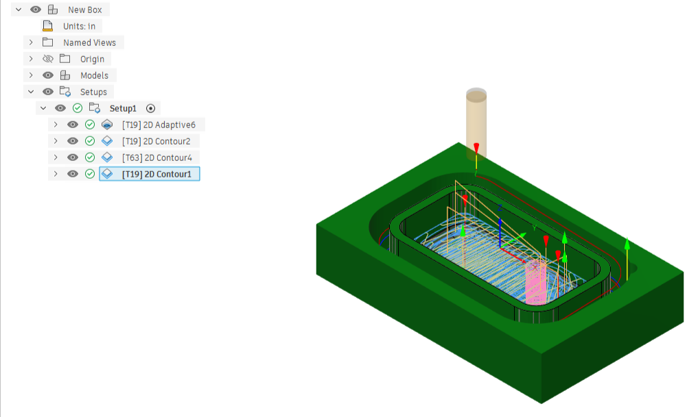
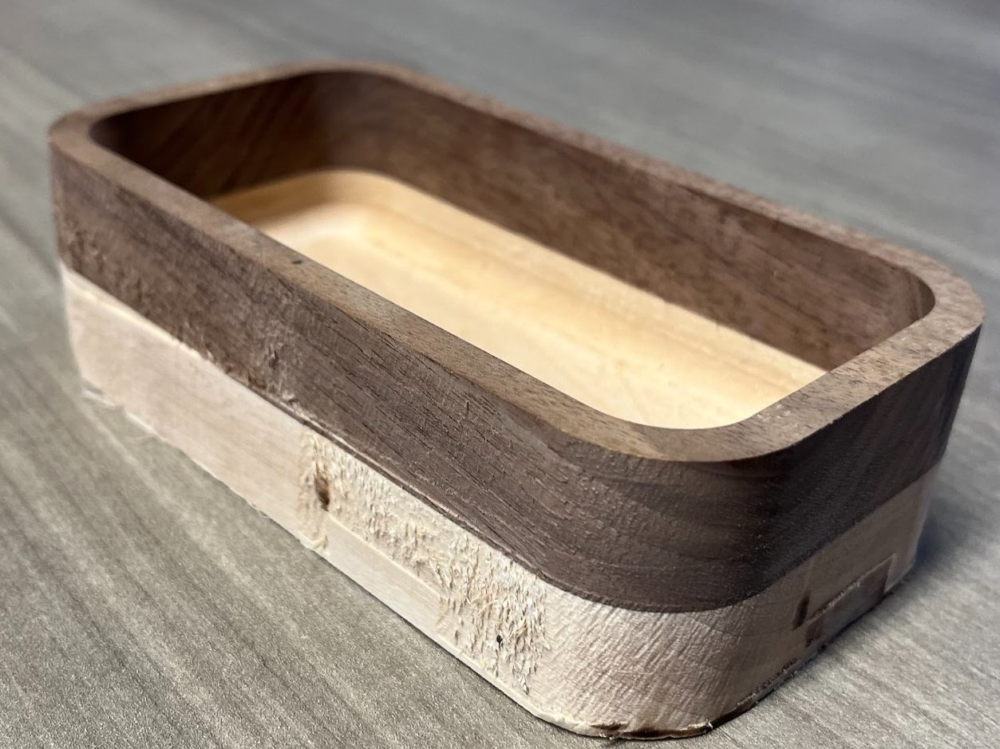
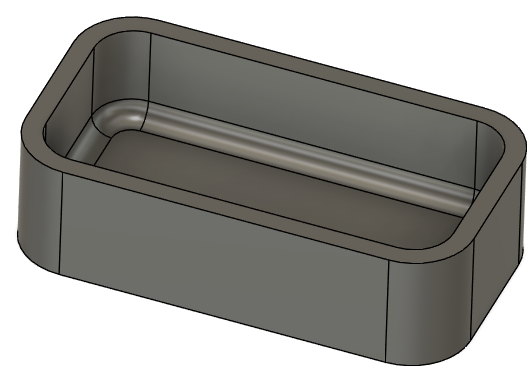
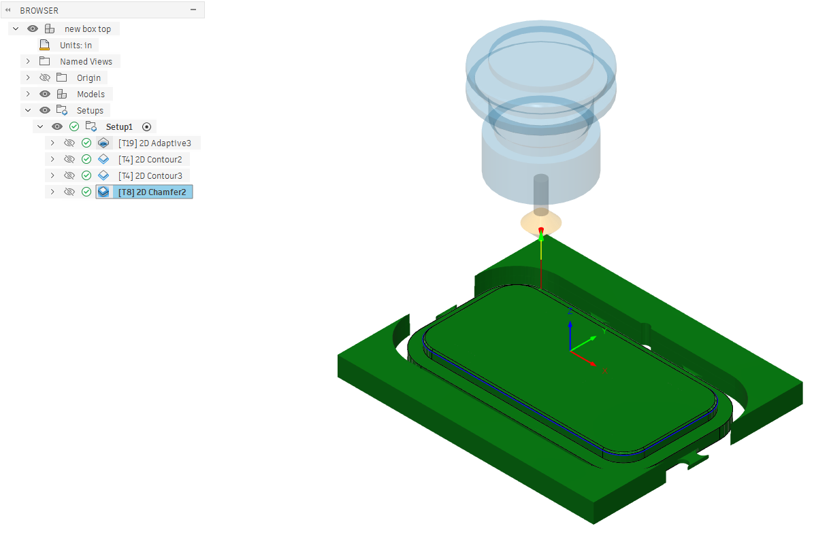

Description
For Assignment 2 of Engineering Semester 1, I created a box consisting of a combination of walnut and maple, with the lid made from walnut. It measures 5 inches in length, 4 inches wide, 2 inches tall, as well as a 0.25-inch fillet on all inside and outside corners.
Stock
To begin the project, I used the chop saw to cut two ¾-inch planks of wood, walnut and maple, to 8 inches long and 5 inches wide for the base of the box. I then used wood glue and clamps to bind the two pieces of wood together without any gaps. I cut another piece of walnut with the same dimensions, this time for the lid.
Photos



The Fusion 360 model

After cutting and gluing my stock, I modeled my box in Fusion 360, starting out with a 2D sketch to create the main body of the box before using the Extrude tool to create a 3D body. After that, I used the Shell feature to hollow out the inside of the box with a wall thickness of 0.25 inches. Finally, I added 0.25-inch fillets to all four corners inside and out, completing the base of the box.
I then moved on to the lid of the box, using the same dimensions as the base of the box and offset by 0.01 inches on each side in order to leave enough space for the lid to press fit into the base of the box.
Machining Process
Machine: Tormach 24R router
Work holding: Stock screwed to the router bed with wood screws
Material: Glued walnut and maple (base), walnut (lid), cut to 8″ × 5″
CAM
After completing the CAD for the box, I used the Manufacturing workspace in Fusion 360 to prepare the CAM operations for the Tormach 24R router. First, I modeled my stock to match the stock I cut from the chop saw and set the origin to the center of the model, so I could probe for the same center point on the machine.
For the base, I started with a 2D Adaptive Clearing operation using a long flat end mill (tool 19). Adaptive clearing keeps a constant load on the tool, so it can remove most of the material inside the box quickly without overloading the bit. I followed it with 2D Contour passes with the same tool to finish the walls and cut the outside profile. Then I switched to a bull-nose end mill (tool 63) for a contour pass that formed the 0.25-inch fillets where the inside walls meet the floor.
For the lid, I used tool 19 with a 2D Adaptive Clearing operation to remove 0.3 inches of extra stock off the top. To cut out the lid itself, I chose a flat end mill (tool 4) because it is an upcut bit which leaves smooth, clean edges along the bottom of the lid unlike a downcut bit. Finally, I used a 90-degree chamfer bit (tool 8) to cut a chamfer along the inside edge of the lid.

Tools I used and why
| Tool # | Bit | Operation | What it did |
|---|---|---|---|
| T19 | Flat end mill (long) | 2D Adaptive Clearing and Contour (base) | Cut out the entire box. The longer flute length let me cut to the full depth of the box. |
| T63 | Bull-nose end mill | 2D Contour (base) | Created smooth 0.25-inch fillets at the inside corners of the base. |
| T19 | Flat end mill (long) | 2D Adaptive Clearing (lid) | Removed lots of material fast. Ex. the 0.3 inches of excess stock off the top of the lid. |
| T4 | Flat end mill | 2D Contour (lid) | Cut out the lid. As an upcut bit, it pulled chips up and out of the cut, leaving smooth bottom edges. |
| T8 | 90° chamfer bit | 2D Chamfer (lid) | Cut a chamfer along the inside edge of the lid automatically guid the lid into a press fit with the base. |
Cutting
After completing the CAM, I post-processed and loaded my G-code into the Tormach 24R router. I secured the stock in the bed with wood screws and probed for the center and the top height of the stock, and then proceeded to cut to produce the finished box.
Wood finishing
After cutting my box, I used the orbital sander to sand off the tabs and excess pieces, then hand sanded the sides. By working from coarse to progressively finer grits, I sanded the box to a smooth finish. After sanding both the lid and the box, I applied tung oil to both pieces and wiped the excess off 10 minutes later. Repeating this process several times gave the box a glossy, waterproof finish and deepened the color of the wood.
Final Thoughts
I'm proud of how this box turned out. The tung oil finish gave the wood a rich, dark color, and the contour operations produced even surfaces along the inside of the box. The walnut and maple glue-up came together without any gaps, and the 0.01-inch offset I designed into the lid let it press fit cleanly into the base.